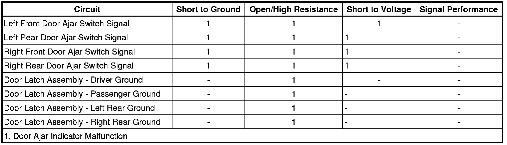

Door Ajar Indicator Malfunction
Door Ajar Indicator Malfunction
Diagnostic Instructions
* Perform the Diagnostic System Check - Vehicle (Initial Inspection and Diagnostic Overview) prior to using this diagnostic procedure.
* Review Strategy Based Diagnosis (Initial Inspection and Diagnostic Overview) for an overview of the diagnostic approach
* Diagnostic Procedure Instructions (Initial Inspection and Diagnostic Overview) provides an overview of each diagnostic category
Diagnostic Fault Information

Circuit/System Description
The driver door module (DDM) and passenger door module (PDM) each receive a discrete input from there respective door ajar switch signal circuits. The body control module (BCM) receives discrete inputs from each of the rear door ajar switch signal circuits. The door ajar switches are integral to each door latch assembly. When a door is opened, the normally open door ajar switch closes. With the door ajar switch closed, ground is provided to the door ajar switch signal circuit. The door control modules and/or BCM interprets this and communicates via GMLAN serial data with the instrument panel cluster (IPC). When a door is open/ajar and the vehicle is in any gear other than PARK, the driver information center (DIC) will display DOOR AJAR for the appropriate door that is opened. If the door is still ajar and the vehicles speed is greater than 4.8 km/h (3 mph) a chime will sound.
Reference Information
Schematic Reference
Door Lock/Indicator Schematics (Door Lock/Indicator Schematics)
Connector End View Reference
Component Connector End Views (Connector Views)
Description and Operation
Power Door Latch Description and Operation (Description and Operation)
Electrical Information Reference
* Circuit Testing (Component Tests and General Diagnostics)
* Connector Repairs (Component Tests and General Diagnostics)
* Testing for Intermittent Conditions and Poor Connections (Component Tests and General Diagnostics)
* Wiring Repairs (Component Tests and General Diagnostics)
Scan Tool Reference
Control Module References (Programming and Relearning)
Circuit/System Verification
1. Ignition ON, observe the scan tool driver door ajar sw. parameter located in the driver door switch data display menu while opening and closing the driver door. The reading should toggle between ACTIVE and INACTIVE.
2. Ignition ON, observe the scan tool passenger door ajar sw. parameter located in the passenger door switch data display menu while opening and closing the front passenger door. The reading should toggle between ACTIVE and INACTIVE.
3. Ignition ON, observe the scan tool left rear door ajar sw. parameter located in the BCM data display menu while opening and closing the left rear passenger door. The reading should toggle between DOOR CLOSED and DOOR AJAR.
4. Ignition ON, observe the scan tool right rear door ajar sw. parameter located in the BCM data display menu while opening and closing the right rear passenger door. The reading should toggle between DOOR CLOSED and DOOR AJAR.
Circuit/System Testing
1. Ignition ON, all doors OPEN, observe the scan tool door ajar switch parameter for each door. The scan tool should display ACTIVE for both front doors and DOOR AJAR for both rear doors and the DOOR AJAR indicator should be ON.
• If the scan tool displays ACTIVE for both front doors and DOOR AJAR for both rear doors and the DOOR AJAR indicator is not ON, replace the IPC.
2. Ignition ON, all doors CLOSED, observe the scan tool door ajar switch parameter for each door. The scan tool should display INACTIVE for both front doors and DOOR CLOSED for both rear doors and the DOOR AJAR indicator should be OFF.
• If the scan tool displays INACTIVE for both front doors and DOOR CLOSED for both rear doors and the DOOR AJAR indicator is ON, replace the IPC.
3. Ignition OFF, disconnect the harness connector at the appropriate door latch assembly.
4. Ignition OFF, verify that a test lamp illuminates between B+ and the ground circuit.
• If the test lamp does not illuminate, test the ground circuit for an open/high resistance.
5. Ignition ON, verify the scan tool door ajar switch parameter displays INACTIVE or DOOR CLOSED.
• If not the specified value, test the door ajar switch signal circuit for a short to ground. If the circuit tests normal, replace the appropriate control module.
6. Install a 3A fused jumper wire between the door ajar switch signal circuit and ground. Verify the scan tool door ajar switch parameter displays ACTIVE or DOOR AJAR.
• If not the specified value, test the signal circuit for a short to voltage or an open/high resistance. If the circuit tests normal, replace the appropriate control module.
7. If all circuits tests normal, test or replace the appropriate door latch assembly.
Repair Instructions
Perform the Diagnostic Repair Verification (Verification Tests) after completing the diagnostic procedure.
* Front Side Door Latch Replacement (Service and Repair)
* Rear Side Door Latch Replacement (Service and Repair)
* Control Module References (Programming and Relearning) for BCM, DDM, IPC, or PDM replacement, setup and programming